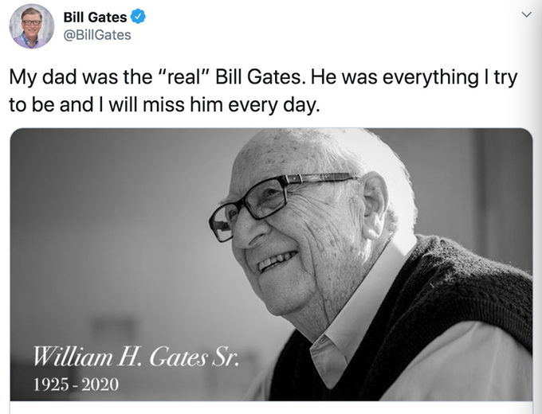

William Henry Gates cho rằng, không một ai sinh ra để làm cha mẹ nên điều quan trọng nhất, mọi cha mẹ cần phải thực hiện chính những điều mình muốn dạy con.
Ngày 14/9, cha đẻ của tỷ phú Bill Gates (tên đầy đủ là William Henry Gates III) qua đời ở tuổi 94. Trên trang Twitter cá nhân, con trai ông - vị tỷ phú công nghệ viết: "Bố tôi mới là Bill Gates 'thực sự'. Ông là tất cả những gì mà tôi cố gắng vươn tới và tôi sẽ nhớ ông rất nhiều".
Bill Gates viết trên blog cá nhân "Cha là tất cả những gì mà tôi muốn cố gắng trở thành" để tưởng nhớ cha mình. Ảnh: Twitter.
Bố mẹ thế nào, con sẽ học theo như thế
Hơn 10 năm trước, Gates cha từng viết một cuốn sách có tên "Bill Gates đã được nuôi dưỡng như thế nào?". Khác với những cuốn sách nuôi dạy con chỉ lấy trẻ làm trung tâm, sách của Gates cha cơ bản nói về bản thân. Trong đó ông nêu quan điểm riêng về hôn nhân, sự nghiệp và thế giới quan của chính mình.
Gates cha nói ông thích công việc, vẫn dậy sớm ở tuổi 83 và lái xe đến văn phòng mỗi sáng để làm việc. Ông đã học hỏi được những điều mới, vẫn phải trưởng thành trong khi tuổi ngày một cao. Ông cũng cho rằng bản thân phải có những lựa chọn xứng đáng, học hỏi những điểm sáng ở trẻ em, quan tâm đến những vùng còn nghèo khó và tiếp thêm sức mạnh cho phụ nữ... Toàn bộ những nội dung nói về vợ và ba đứa con, không có sự ưu ái nào đặc biệt cho Bill Gates.
"Bố mẹ là người như thế nào, đứa trẻ sẽ là người như thế đó", Gates cha đã nhấn mạnh trong cuốn sách của mình.
Không có gì ngạc nhiên khi Bill đã viết trong lá thư thương tiếc cha: "Khi lớn lên tôi bắt đầu đánh giá cao ảnh hưởng của cha đối với cuộc sống của bản thân. Trong những ngày đầu của Microsoft, tôi đã tìm đến ông vào những thời điểm quan trọng và tìm kiếm lời khuyên. Ông luôn ở bên tôi đúng những thời điểm quan trọng nhất cuộc đời".
"Cha tôi có ảnh hưởng sâu sắc đến tính tự chủ của tôi. Khi còn nhỏ, ông không độc tài hay hống hách. Ông là người lao động chăm chỉ nhất ở Seattle, là một tấm gương đạo đức nghề nghiệp đáng kinh ngạc. Một trong những luật sư được kính trọng nhất của thành phố".
"Cha có ảnh hưởng lớn đến hoạt động từ thiện của chúng tôi. Trong suốt thời thơ ấu, cha mẹ đã sử dụng thời gian và nguồn lực họ có để làm từ thiện thực sự. Cha có óc phán đoán và rất nghiêm túc trong việc học. Ông rất uy nghiêm nhưng ghét những ai kiêu căng".
Cuối cùng Bill Gates viết: "Cha mẹ làm gì, nghĩ gì chúng tôi cũng nhìn thấy trước mắt và âm thầm bị ảnh hưởng".
Bận rộn thế nào cũng dành thời gian cho con
Cách đây vài năm, trong một cuộc phỏng vấn trên truyền hình, bà Melinda - vợ của Bill Gates tiết lộ, khi con gái lớn học mẫu giáo, Bill luôn đưa đón con 2 lần mỗi tuần dù bận đến đâu. Từ thời điểm đó, số lượng các ông bố đến đón con tại trường mẫu giáo ngày càng tăng lên. Hóa ra mẹ của những đứa trẻ đã nói với chồng họ: "Bill Gates còn có thể đón con, tại sao anh lại không?"
Người đàn ông phú giàu nhất thế giới đã viết trong lá thư để tang cha mình: "Cha đã ảnh hưởng tích cực đến những vai trò quan trọng nhất của tôi - làm chồng và làm cha, Khi tôi làm tốt nhất vai trò đó, tôi biết rằng đó là bởi vì tôi học được từ cha cách tôn trọng phụ nữ, tôn trọng cá tính và hướng dẫn bọn trẻ lựa chọn bằng tình yêu và sự tôn trọng.".
Leave a Reply
Your email address will not be published. Required Fields are marked *